iPad文件传输到windows
处于同一wifi下的iPad与windows文件传输，务必阅读完再进行操作，亲测13g视频花了大概十分钟不到
准备工作：打开SMB
控制面板-程序-启用或关闭windows功能
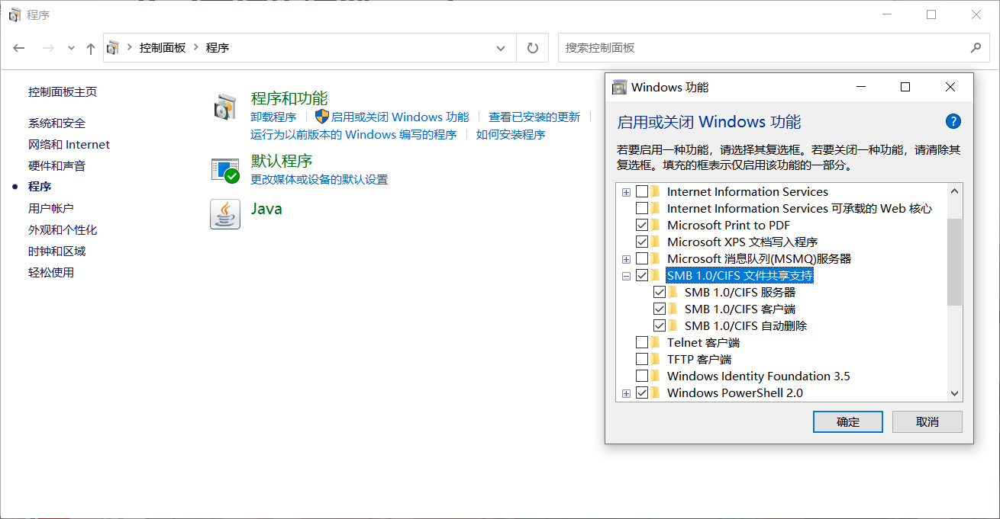
确定后重启电脑
创建共享文件夹
任意位置新建文件夹，右键属性-共享
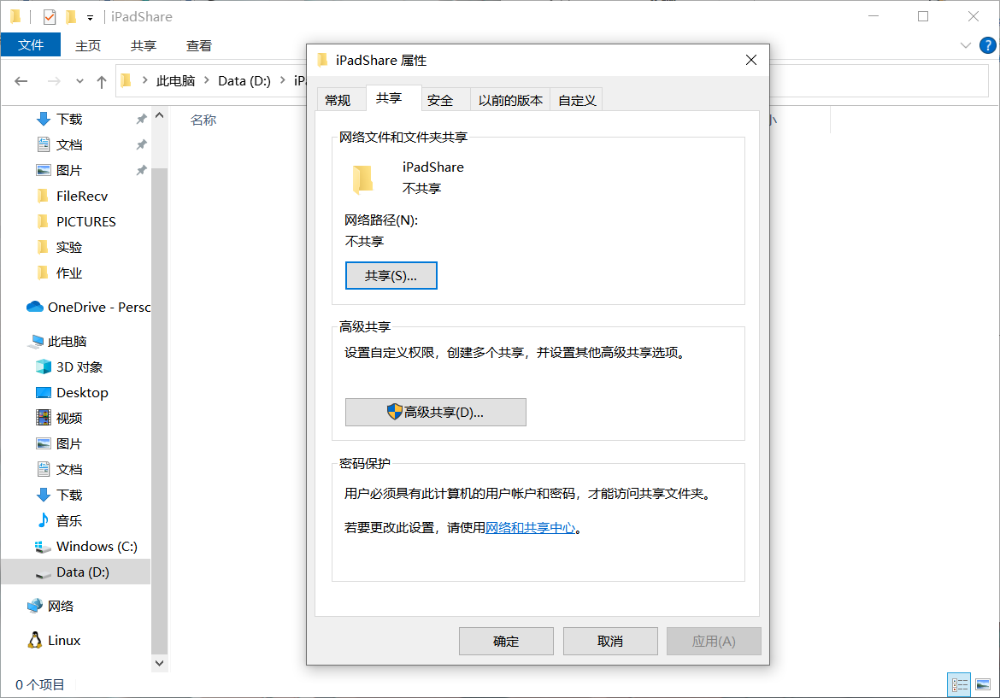
点击共享
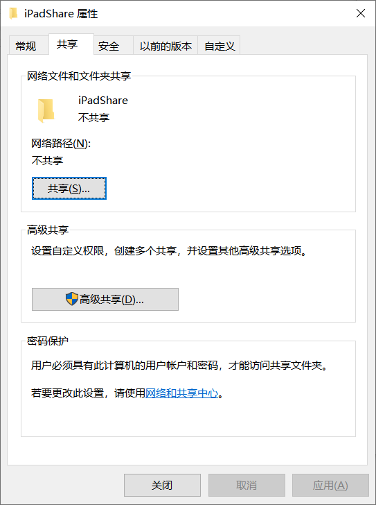
选择自己的账号并添加，然后点击共享（一般都默认会有自己的账号，没有的情况请自行创建一个本地账号）
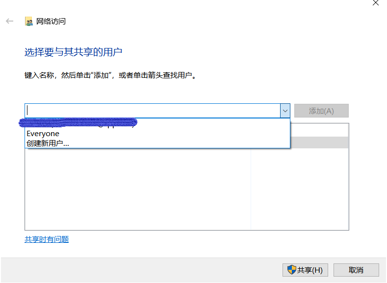
iPad连接
然后iPad上打开文件，点击三个点图标-连接服务器
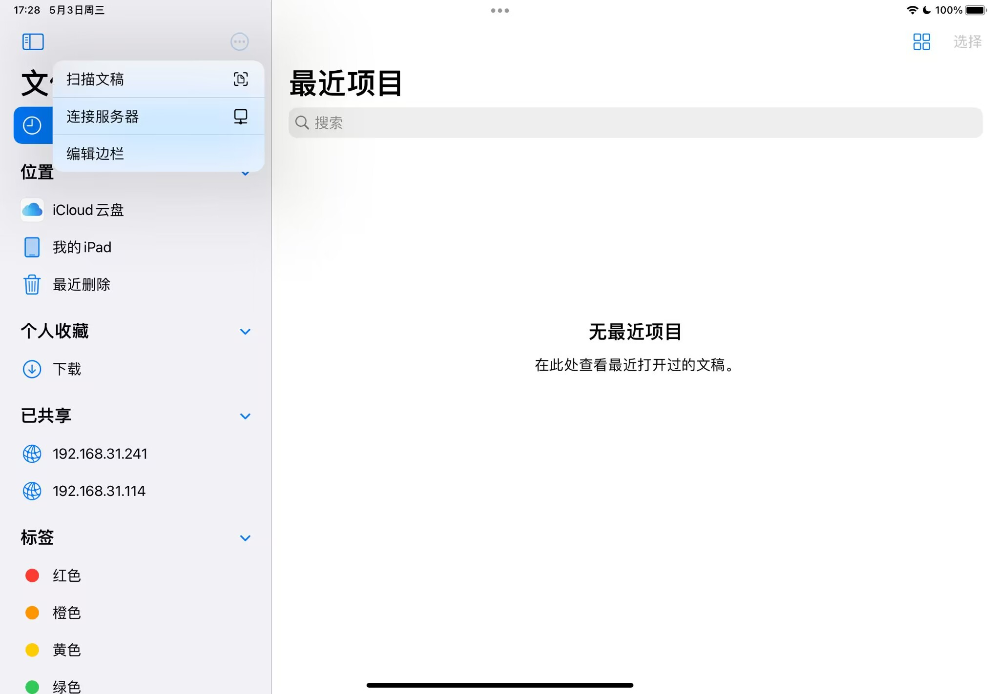
输入smb://+电脑端的ip地址（cmd通过ipconfig获取，不多赘述）
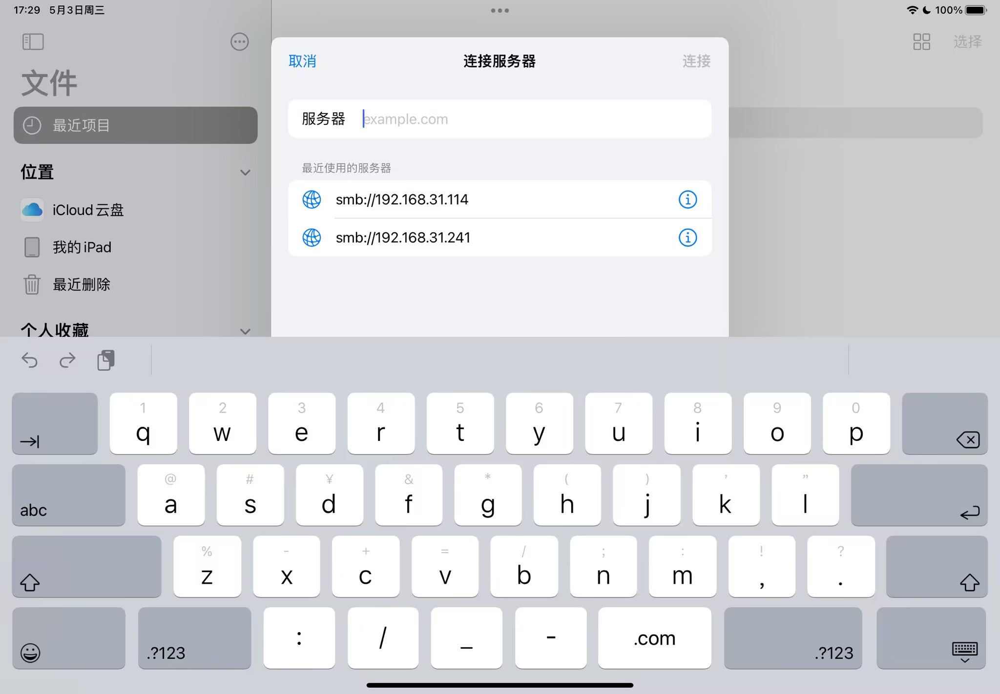
选择注册用户，输入windows用户名和密码
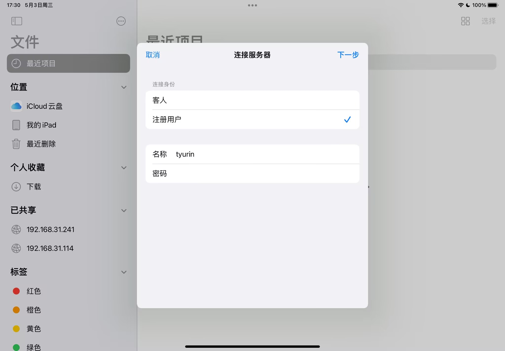
用户就是C:/Users下的用户，密码就是pin
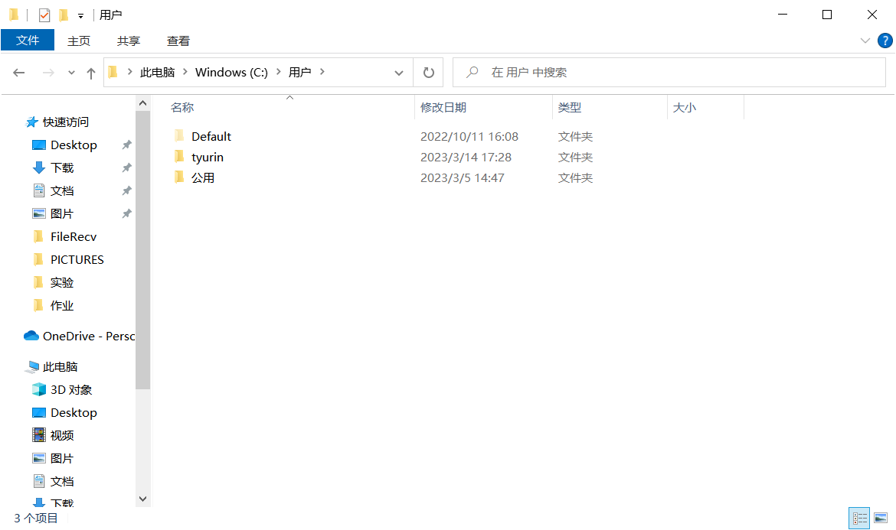
上传文件至共享文件夹
点击分享-存储到文件，然后直接点共享文件夹存进去就好啦
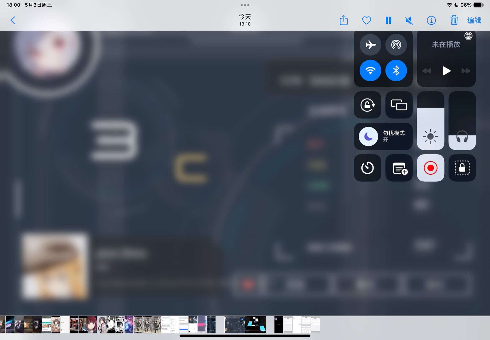
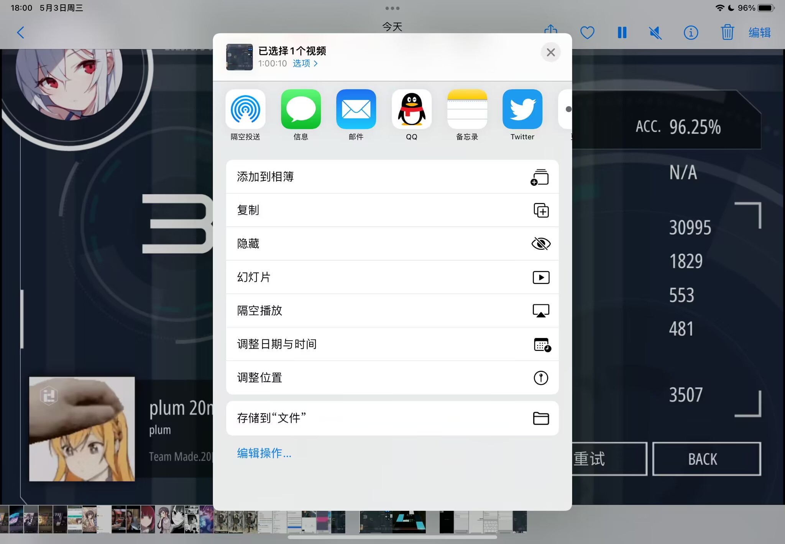
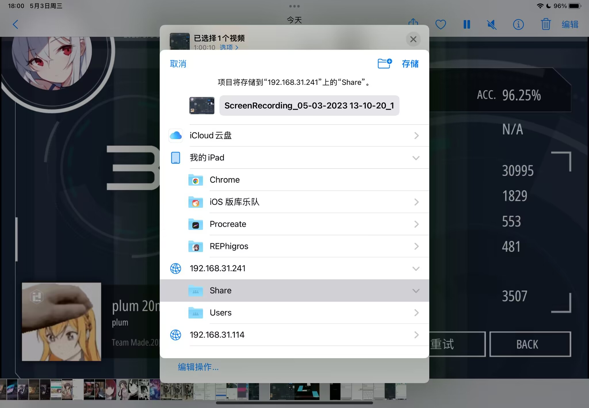